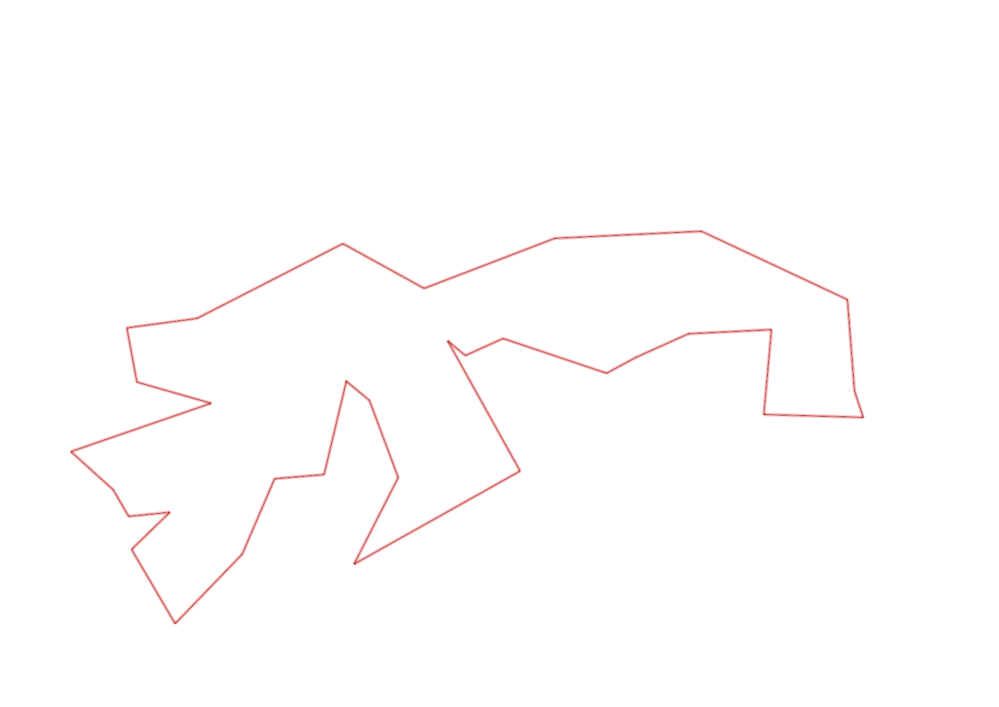
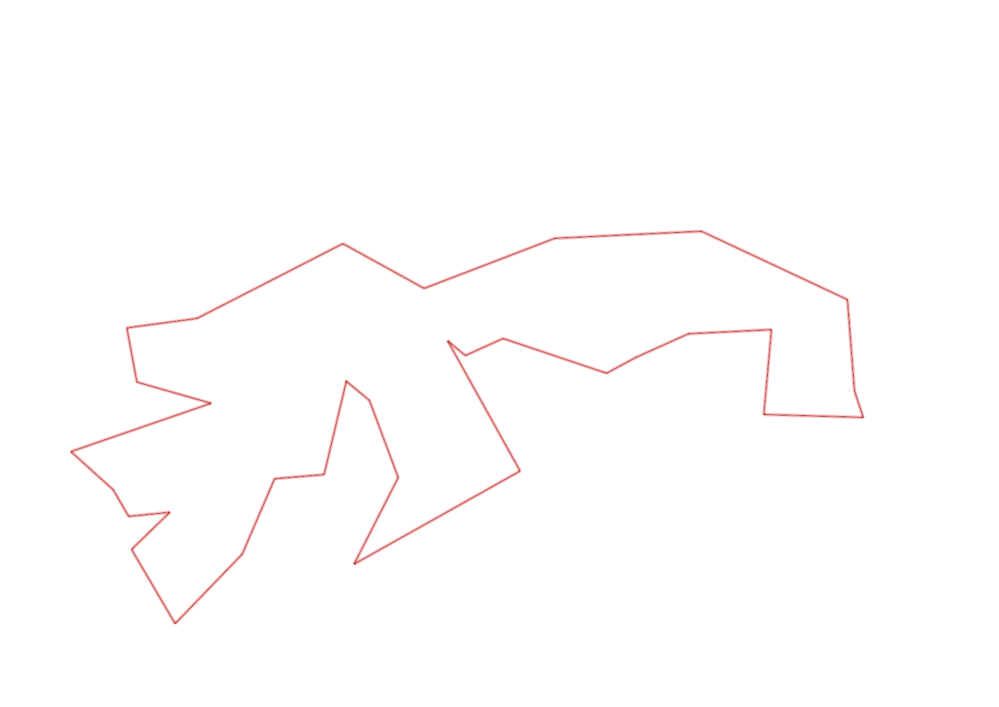

| Control |
Points |
Time Punched |
Distance |
Your Time |
Pace |
Place |
Fastest Time |
Median Time |
% Behind Fastest |
| 127 |
20 |
|
0.06 |
0:00:16 |
04:26 |
11 / 30 |
0:00:01 |
0:00:32 |
1500% |
| 42 |
40 |
|
0.17 |
0:01:42 |
10:00 |
6 / 20 |
0:01:06 |
0:01:52 |
54% |
| 61 |
60 |
|
0.21 |
0:02:43 |
12:56 |
3 / 20 |
0:02:20 |
0:03:34 |
16% |
| 37 |
30 |
|
0.4 |
0:03:20 |
08:20 |
1 / 6 |
0:03:20 |
0:04:58 |
0% |
| 92 |
90 |
|
0.32 |
0:02:50 |
08:51 |
1 / 1 |
0:02:50 |
0:02:50 |
0% |
| 35 |
30 |
|
0.05 |
0:02:26 |
48:40 |
11 / 12 |
0:01:31 |
0:01:55 |
60% |
| 47 |
40 |
|
0.09 |
0:02:44 |
30:22 |
10 / 11 |
0:00:54 |
0:01:31 |
203% |
| 48 |
40 |
|
0.23 |
0:02:59 |
12:58 |
3 / 7 |
0:02:14 |
0:03:31 |
33% |
| 64 |
60 |
|
0.07 |
0:00:57 |
13:34 |
6 / 14 |
0:00:38 |
0:01:05 |
50% |
| 49 |
40 |
|
0.12 |
0:01:04 |
08:53 |
4 / 12 |
0:00:55 |
0:01:28 |
16% |
| 52 |
50 |
|
0.18 |
0:03:41 |
20:27 |
1 / 1 |
0:03:41 |
0:03:41 |
0% |
| 46 |
40 |
|
0.18 |
0:01:32 |
08:31 |
1 / 3 |
0:01:32 |
0:02:41 |
0% |
| 75 |
70 |
|
0.21 |
0:02:33 |
12:08 |
3 / 7 |
0:02:06 |
0:02:33 |
21% |
| 56 |
50 |
|
0.06 |
0:00:51 |
14:10 |
6 / 8 |
0:00:25 |
0:00:39 |
104% |
| 81 |
80 |
|
0.19 |
0:01:06 |
05:47 |
2 / 7 |
0:00:54 |
0:01:17 |
22% |
| 109 |
100 |
|
0.34 |
0:02:07 |
06:13 |
1 / 1 |
0:02:07 |
0:02:07 |
0% |
| 123 |
20 |
|
0.31 |
0:02:32 |
08:10 |
4 / 10 |
0:01:36 |
0:02:50 |
58% |
| 57 |
50 |
|
0.3 |
0:02:50 |
09:26 |
2 / 3 |
-1 day, 23:19:12 |
0:02:50 |
-99% |
| 107 |
100 |
|
0.2 |
0:02:28 |
12:20 |
8 / 21 |
0:00:00 |
0:02:52 |
-% |
| 63 |
60 |
|
0.35 |
0:02:01 |
05:45 |
2 / 18 |
0:01:59 |
0:02:42 |
1% |
| 32 |
30 |
|
0.15 |
0:00:40 |
04:26 |
2 / 27 |
0:00:36 |
0:00:56 |
11% |
| 44 |
40 |
|
0.12 |
0:00:55 |
07:38 |
2 / 29 |
0:00:52 |
0:01:49 |
5% |
| 130 |
30 |
|
0.16 |
0:01:27 |
09:03 |
3 / 4 |
0:00:58 |
0:01:26 |
50% |
| 53 |
50 |
|
0.31 |
0:02:25 |
07:47 |
1 / 2 |
0:02:25 |
0:02:31 |
0% |
| 69 |
60 |
|
0.12 |
0:00:51 |
07:05 |
3 / 29 |
0:00:45 |
0:01:18 |
13% |
| 71 |
70 |
|
0.06 |
0:01:05 |
18:03 |
7 / 25 |
0:00:48 |
0:01:13 |
35% |
| 41 |
40 |
|
0.09 |
0:01:53 |
20:55 |
7 / 8 |
0:00:47 |
0:01:39 |
140% |
| 40 |
40 |
|
0.11 |
0:00:47 |
07:07 |
3 / 24 |
0:00:45 |
0:01:00 |
4% |
| 77 |
70 |
|
0.18 |
0:01:36 |
08:53 |
2 / 21 |
0:01:35 |
0:02:21 |
1% |
| 59 |
50 |
|
0.21 |
0:02:02 |
09:40 |
2 / 18 |
0:02:00 |
0:02:47 |
1% |
| 60 |
60 |
|
0.17 |
-1 day, 23:03:37 |
135:38:55 |
1 / 2 |
-1 day, 23:03:37 |
-1 day, 23:32:40 |
0% |
| 38 |
30 |
|
0.11 |
0:00:00 |
00:00 |
1 / 15 |
0:00:00 |
0:01:15 |
-% |
| Finish |
0 |
|
0.2 |
1:00:05 |
5:00:25 |
10 / 10 |
-1 day, 23:07:29 |
0:01:37 |
-95% |
Total Distance Covered: 6.03km
Points Scored: 1640
Late Penalty: -20
Final Score: 1620
Total Time: 1hours 0minutes 5seconds
Efficiency: 268.66 points/km
 
